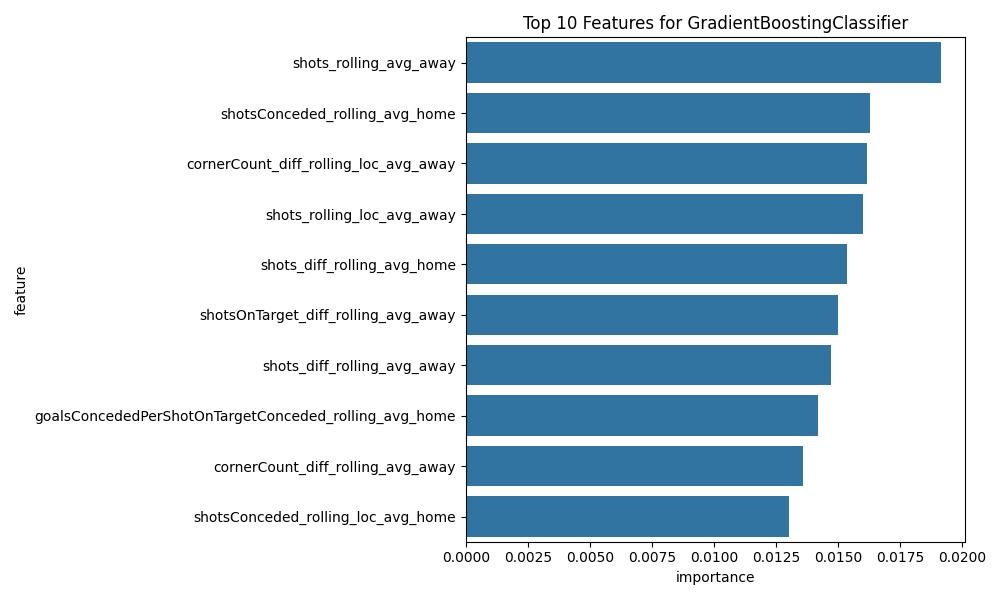
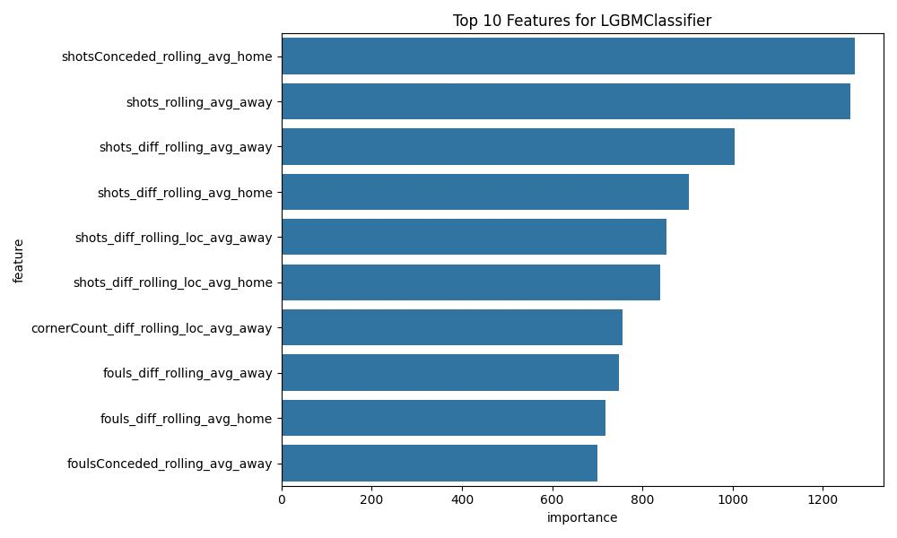
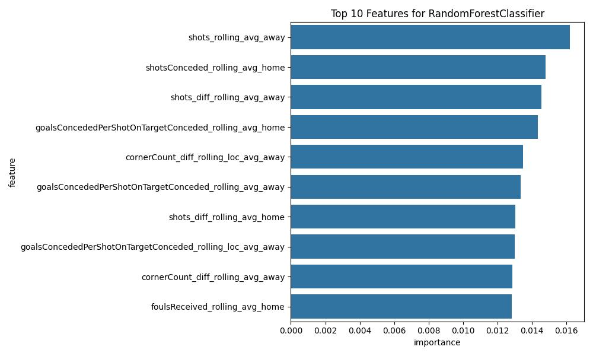
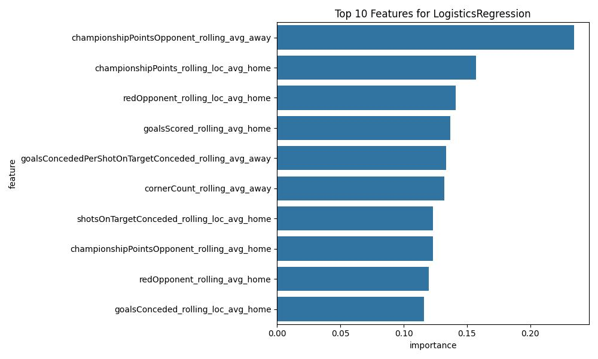

How To Build A Betfair Soccer Bot Part 1
"I want to build a bot, but I don't know where to start"
It's a common refrain uttered by many an aspiring punter when they hear about the possibilities of betting automation on the Betfair Exchange. It sounds like something that shouldn't be too difficult, especially in the age of ChatGPT, but as any YouTube video claiming to build a betting bot using just a LLM, it's a lot harder than it looks.
"Well, how can I learn how to build one?"
There are few comprehensive resources available, especially those without a paywall or hidden motivation, on building a model and a bot from scratch. Sourcing the data itself can be an unexpectedly expensive venture, with data as a product becoming more and more prevalent. This tutorial for building this English Premier League (EPL) model and setting the automation are completely free. The simulation steps do require access to the Betfair PRO data, which is a paid product. Australian and New Zealand customers should reach out to us directly at automation@betfair.com.au to discuss options for accessing this data.
As outlined in the tutorial, by the end you'll have read how to:
- Utilise a free basic data source to build and train a machine learning model to predict the probability of a team scoring X goals in the first half of and also in the entirety of an EPL match
- Calculate the probability of each outcome in the most popular pre-match team-level markets on the EPL
- Simulate the placing of bets based on the model's predictions into these markets over the 2022-2023 and 2023-2024 EPL seasons
- Analyse the results of these simulations to determine a possible profitable angle
- Create new predictions for future matches
- Setup and run the new model to place real bets
Without further ado, let's jump right into it
Dataset
The Dataset we're using to build our model can be sourced from http://football-data.co.uk.
The Code
Feature Engineering
import pandas as pd
import warnings
warnings.filterwarnings('ignore')
from datetime import datetime
'''
This code will detail how to build a machine-learning model on a historical English Premier League dataset.
We'll load our dataset, clean it, create our features and then train our algorithm before massaging the output
'''
# Specify destination for files
destination = 'INSERT WORKING DIRECTORY HERE'
# Set a list of important columns to keep
column_list = ['date','name','match_id','home_or_away']
# Specify column lists to use later
MATCH_INFO_COLUMNS = ['date_home','match_id','name_home','name_away','goalsScored_home','goalsScored_away','halfTimeGoalsScored_home','halfTimeGoalsScored_away']
DROP_COLUMNS = ['home_or_away_home','date_away','home_or_away_away','goalsConceded_home','goalsConceded_away','halfTimeGoalsConceded_home','halfTimeGoalsConceded_away']
def load_data():
# Load our csv file and set the date format
df = pd.read_csv('englishPremierLeague.csv')
df['date']= pd.to_datetime(df['date'],format='%d/%m/%Y')
raw_match_stats = df[[
'date',
'match_id',
'home_team_name',
'away_team_name',
'home_team_goal_count',
'away_team_goal_count',
'home_team_half_time_goal_count',
'away_team_half_time_goal_count',
'home_team_shots',
'away_team_shots',
'home_team_shots_on_target',
'away_team_shots_on_target',
'home_team_fouls',
'away_team_fouls',
'home_team_corner_count',
'away_team_corner_count',
'home_team_yellow',
'away_team_yellow',
'home_team_red',
'away_team_red'
]]
return raw_match_stats
def championshipPoints(raw_match_stats):
# Determine the number of Championship points received by the team from the result
raw_match_stats.loc[raw_match_stats['home_team_goal_count'] == raw_match_stats['away_team_goal_count'], 'home_team_CP'] = 1
raw_match_stats.loc[raw_match_stats['home_team_goal_count'] > raw_match_stats['away_team_goal_count'], 'home_team_CP'] = 3
raw_match_stats.loc[raw_match_stats['home_team_goal_count'] < raw_match_stats['away_team_goal_count'], 'home_team_CP'] = 0
raw_match_stats.loc[raw_match_stats['home_team_goal_count'] == raw_match_stats['away_team_goal_count'], 'away_team_CP'] = 1
raw_match_stats.loc[raw_match_stats['home_team_goal_count'] > raw_match_stats['away_team_goal_count'], 'away_team_CP'] = 0
raw_match_stats.loc[raw_match_stats['home_team_goal_count'] < raw_match_stats['away_team_goal_count'], 'away_team_CP'] = 3
return raw_match_stats
def separate_home_and_away(raw_match_stats):
'''
This function performs the action of assigning the statistics to each team in the match and then stacking the dataframes together
We assign a status of home or away so that we can calculate rolling windows specifically for home and away matches.
Additionally we want to stack them so that we can calculate rolling windows for any matches regardless of home/away
'''
# Keep only the required columns
home_team_stats = raw_match_stats[[
'date',
'match_id',
'home_team_name',
'home_team_goal_count',
'home_team_half_time_goal_count',
'home_team_corner_count',
'home_team_shots',
'home_team_shots_on_target',
'home_team_fouls',
'home_team_yellow',
'home_team_red',
'home_team_CP',
'away_team_CP',
'away_team_goal_count',
'away_team_half_time_goal_count',
'away_team_corner_count',
'away_team_shots',
'away_team_shots_on_target',
'away_team_fouls',
'away_team_yellow',
'away_team_red']]
# Rename the columns as required
home_team_stats = home_team_stats.rename(columns={'home_team_name':'name',
'home_team_goal_count':'goalsScored',
'home_team_half_time_goal_count':'halfTimeGoalsScored',
'home_team_corner_count':'cornerCount',
'home_team_shots':'shots',
'home_team_shots_on_target':'shotsOnTarget',
'home_team_fouls':'foulsConceded',
'home_team_yellow':'yellowConceded',
'home_team_red':'redConceded',
'home_team_CP':'championshipPoints',
'away_team_CP':'championshipPointsOpponent',
'away_team_goal_count':'goalsConceded',
'away_team_half_time_goal_count':'halfTimeGoalsConceded',
'away_team_corner_count':'cornersConceded',
'away_team_shots':'shotsConceded',
'away_team_shots_on_target':'shotsOnTargetConceded',
'away_team_fouls':'foulsReceived',
'away_team_yellow':'yellowOpponent',
'away_team_red':'redOpponent'})
# Set the home/away status
home_team_stats['home_or_away']='Home'
# Keep only the required columns
away_team_stats = raw_match_stats[[
'date',
'match_id',
'away_team_name',
'away_team_goal_count',
'away_team_half_time_goal_count',
'away_team_corner_count',
'away_team_shots',
'away_team_shots_on_target',
'away_team_fouls',
'away_team_yellow',
'away_team_red',
'away_team_CP',
'home_team_CP',
'home_team_goal_count',
'home_team_half_time_goal_count',
'home_team_corner_count',
'home_team_shots',
'home_team_shots_on_target',
'home_team_fouls',
'home_team_yellow',
'home_team_red']]
# Rename the columns as required
away_team_stats = away_team_stats.rename(columns={'away_team_name':'name',
'away_team_goal_count':'goalsScored',
'away_team_half_time_goal_count':'halfTimeGoalsScored',
'away_team_corner_count':'cornerCount',
'away_team_shots':'shots',
'away_team_shots_on_target':'shotsOnTarget',
'away_team_fouls':'foulsConceded',
'away_team_yellow':'yellowConceded',
'away_team_red':'redConceded',
'away_team_CP':'championshipPoints',
'home_team_CP':'championshipPointsOpponent',
'home_team_goal_count':'goalsConceded',
'home_team_half_time_goal_count':'halfTimeGoalsConceded',
'home_team_corner_count':'cornersConceded',
'home_team_shots':'shotsConceded',
'home_team_shots_on_target':'shotsOnTargetConceded',
'home_team_fouls':'foulsReceived',
'home_team_yellow':'yellowOpponent',
'home_team_red':'redOpponent'})
# Set the home/away status
away_team_stats['home_or_away']='Away'
# Stack the two dataframes together
team_stats_per_match = pd.concat([home_team_stats,away_team_stats])
# Fix up some inconsistent naming within the dataset to match the exchange nomenclature
team_stats_per_match['name'] = team_stats_per_match['name'].replace({'Man United':'Man Utd',"Nott'm Forest":'Nottm Forest','Sheffield United':'Sheff Utd'})
return team_stats_per_match
def calculate_differential(df):
# This function creates some columns which are differences between certain statistics
df['goalsScored_diff'] = df['goalsScored'] - df['goalsConceded']
df['halfTimeGoalsScored_diff'] = df['halfTimeGoalsScored'] - df['halfTimeGoalsConceded']
df['cornerCount_diff'] = df['cornerCount'] - df['cornersConceded']
df['shots_diff'] = df['shots'] - df['shotsConceded']
df['shotsOnTarget_diff'] = df['shotsOnTarget'] - df['shotsOnTargetConceded']
df['fouls_diff'] = df['foulsConceded'] - df['foulsReceived']
df['yellowCard_diff'] = df['yellowConceded'] - df['yellowOpponent']
df['redCard_diff'] = df['redConceded'] - df['redOpponent']
df['championshipPoints_diff'] = df['championshipPoints'] - df['championshipPointsOpponent']
# This is an example of a ratio feature where you tell the model how certain features relate to each other
df['goalsConcededPerShotOnTargetConceded'] = df['goalsConceded'] / df['shotsOnTargetConceded']
# Calculate days since last match
df.sort_values(by=['name','date'])
df['days_since_last_match'] = df.groupby('name')['date'].diff().dt.days
return df
def calculate_rolling_median(team_stats_per_match):
# Sort the DataFrame by 'match_team' alphabetically and 'match_id' ascending
team_data_all_sorted = team_stats_per_match.sort_values(by=['name', 'match_id'])
# Identify columns that start with 'team'
team_columns = [col for col in team_data_all_sorted.columns if col not in column_list and col != 'days_since_last_match']
# Calculate rolling average windows for the past 10 matches and 5 home/away matches
for col in team_columns:
team_data_all_sorted[f'{col}_rolling_avg'] = team_data_all_sorted.groupby('name')[col].transform(lambda x: x.shift(1).rolling(window=10, min_periods=1).mean())
team_data_all_sorted[f'{col}_rolling_loc_avg'] = team_data_all_sorted.groupby(['name','home_or_away'])[col].transform(lambda x: x.shift(1).rolling(window=5, min_periods =1).mean())
# Create a list of columns for the rolling features
team_rolling_columns = [col for col in team_data_all_sorted.columns if 'rolling' in col]
return team_data_all_sorted, team_rolling_columns
def rejoin_home_away_data(team_data_all_sorted,column_list,team_rolling_columns):
# Specify a list of columns to update
columns_to_update = ['goalsScored', 'goalsConceded', 'halfTimeGoalsScored', 'halfTimeGoalsConceded']
# Create a new dataframe which contains a subset of the previous dataframe
team_data_all_sorted = team_data_all_sorted[column_list+['days_since_last_match']+columns_to_update+team_rolling_columns]
# Replace any instances of 8 or 9 goals with 7. This class only occurs a few times and is statistically insignificant
team_data_all_sorted[columns_to_update] = team_data_all_sorted[columns_to_update].replace({8: 6, 9: 6})
# Discord rows where the team has not played for more than 120 days - teams newly promoted after previously being relegated
team_data_all_sorted = team_data_all_sorted[team_data_all_sorted['days_since_last_match'] <= 300]
# Separate the home and away team data, then remerge it
home_team_rolling_stats = team_data_all_sorted[team_data_all_sorted['home_or_away'] == 'Home']
away_team_rolling_stats = team_data_all_sorted[team_data_all_sorted['home_or_away'] == 'Away']
team_stats_rolling_dataframe = pd.merge(home_team_rolling_stats,away_team_rolling_stats,
how='left',
on=['match_id'],
suffixes=['_home','_away'])
return team_stats_rolling_dataframe
def reshape_dataframe(MATCH_INFO_COLUMNS,DROP_COLUMNS,team_stats_rolling_dataframe):
# Create a list of feature columns
feature_columns = [col for col in team_stats_rolling_dataframe.columns if col not in DROP_COLUMNS and col not in MATCH_INFO_COLUMNS]
# Keep only required columns
team_stats_rolling_dataframe = team_stats_rolling_dataframe[MATCH_INFO_COLUMNS+feature_columns]
# Drop rows with empty features - this will be for matches at the start of the dataset or for teams that have been promoted for the first time
team_stats_rolling_dataframe.dropna(inplace=True)
return team_stats_rolling_dataframe,feature_columns
'''
After defining all our functions, it's time to actually run the code.
This compartmentalisation of code enables code to be portable and easily adapted to different projects
and is generally considered to be best practice
'''
raw_match_stats = load_data()
raw_match_stats = championshipPoints(raw_match_stats)
team_match_stats = separate_home_and_away(raw_match_stats)
team_match_stats = calculate_differential(team_match_stats)
team_data_all_sorted, team_rolling_columns = calculate_rolling_median(team_match_stats)
team_stats_rolling_dataframe = rejoin_home_away_data(team_data_all_sorted,column_list,team_rolling_columns)
team_stats_rolling_dataframe,feature_columns = reshape_dataframe(MATCH_INFO_COLUMNS,DROP_COLUMNS,team_stats_rolling_dataframe)
Normalisation
Several machine learning models perform better or require feature values to be normalised (scaled to a standard range, typically 0-1 or -1 to 1). This is especially true for models sensitive to the magnitude of the input features.
Here are the models where normalisation is either required or recommended:
Models that require normalisation:
1. K-Nearest Neighbors (KNN) - Distance-based algorithms like KNN rely heavily on the magnitude of features. Features with larger scales can dominate the distance calculations, so normalisation is crucial.
2. Support Vector Machines (SVM) - SVMs aim to find a hyperplane that maximizes the margin between classes. Without normalisation, features with larger values could dominate the decision boundary.
3. Neural Networks - Deep learning models, including multilayer perceptrons (MLPs), benefit from normalisation to ensure faster and more stable convergence during training.
4. Principal Component Analysis (PCA) - PCA relies on the variance of features to reduce dimensionality. Without normalisation, features with larger scales may influence the principal components more.
Models that benefit from normalisation:
1. Logistic Regression - While not strictly necessary, normalisation can improve convergence speed in gradient-based optimisation and ensure the model is less influenced by large-scale features.
2. Gradient-based models (e.g., Gradient Boosting Machines) - Models like GradientBoosting or XGBoost benefit from normalisation to improve convergence and minimize bias from features with higher scales.
3. Perceptron and Linear Discriminant Analysis (LDA) - Similar to logistic regression, normalisation helps with convergence and ensures that all features contribute equally to decision-making.
Models that typically do not require normalisation:
1. Tree-based models (e.g., Random Forest, Decision Trees) - These models are invariant to feature scaling because they use splitting based on thresholds rather than distance or gradient-based optimisation.
2. Naive Bayes - Naive Bayes uses conditional probabilities, which do not require normalisation.
3. Rule-based models (e.g., Decision Rules, Association Rules) - These models do not rely on feature magnitude, so normalisation is generally unnecessary.
Since we're training multiple models, we want to normalise the data because the KNN algorithm requires it and Logistic Regression will certainly benefit from it
We have two options here:
- Option 1: Using StandardScaler (standard normalisation)
- Option 2: Using MinMaxScaler (scaling to a range of 0-1)
We'll use option 1, but you could try with Option 2 to see if it improves the results
from sklearn.preprocessing import StandardScaler
# Instantiate the scaler
scaler = StandardScaler()
# Select the columns to normalize (feature_columns)
team_stats_rolling_dataframe[feature_columns] = scaler.fit_transform(team_stats_rolling_dataframe[feature_columns])
Training the algorithm
Time for a check-in. Up to this point we've loaded in our dataset and applied our pre-processing steps which involved cleaning the dataset by fixing any team name issues and identified and discarded or altered any data that might prove to hinder the algorithm. Some subject matter expertise is generally required to identify data such as this.
Using our knowledge of the promotion/relegation mechanism prevalent in the EPL, we were able to filter out data where a team's previous form in the dataset may be missing (if they have been promoted for the first time in the context of our dataset) or not reflective of the true form (if they were relegated in 2019-2020 and then rejoined the EPL in 2023-2024 then their previous matches for calculating the rolling median would be vastly out of date and so should be discarded.)
Another tool we have used is to identify the prevalence of certain scorelines (final goal scores of 8 and 9) as being statistically insignificant and so we have 'clipped' these values by reducing them to 7. Thresholds for this clipping will vary greatly by sport and even by league so it's important to assess model accuracy both with and without clipping (and also for different clipping values) to determine what the ideal threshold might be.
Now lets train the algorithm(s)!
def train_test_split(final_dataset, split_date):
'''
This function splits the dataset into a training set and a test set for the purposes of model training.
This is to enable testing of the trained model on an unseen test set to establish statistical metrics regarding its accuracy.
'''
final_dataset['date_home'] = pd.to_datetime(final_dataset['date_home'], format='%Y-%m-%d').dt.tz_localize(None)
# Split the data into train and test data
train_data = final_dataset[final_dataset['date_home'] < split_date].reset_index(drop=True)
test_data = final_dataset[(final_dataset['date_home'] >= split_date) & (final_dataset['date_home'] < datetime.today())].reset_index(drop=True)
return test_data, train_data
test_data, train_data = train_test_split(team_stats_rolling_dataframe, datetime(2022,8,1))
'''
With our models we're aiming to predict the probability of a team scoring a certain number of goals by either half-time or full-time
Afterwards we will calculate the product of each combination to find the probability of a certain match score for half time or full time
We will then create a rated price for each unique selection in each market based on the selection
'''
# Split off the match info to rejoin to the test set later
match_info = test_data[MATCH_INFO_COLUMNS]
# Define our training set for each of the four targets
train_x = train_data.drop(columns=MATCH_INFO_COLUMNS)
home_goals_train = train_data['goalsScored_home']
away_goals_train = train_data['goalsScored_away']
home_ht_goals_train = train_data['halfTimeGoalsScored_home']
away_ht_goals_train = train_data['halfTimeGoalsScored_away']
# Define our test set for each of the four targets
test_x = test_data.drop(columns=MATCH_INFO_COLUMNS)
home_goals_test = test_data['goalsScored_home']
away_goals_test = test_data['goalsScored_away']
home_ht_goals_test = test_data['halfTimeGoalsScored_home']
away_ht_goals_test = test_data['halfTimeGoalsScored_away']
from sklearn.ensemble import GradientBoostingClassifier
from sklearn.neighbors import KNeighborsClassifier
from sklearn.ensemble import RandomForestClassifier
from sklearn.linear_model import LogisticRegression
from lightgbm import LGBMClassifier
from sklearn.metrics import root_mean_squared_error
import pickle
def define_models():
'''
This function defines a number of machine learning algorithms with some suggested hyperparameters.
The purpose of this is to demonstrate the differences in accuracy as well as testing times for each different algorithm specifically in relation to this dataset
'''
models = {
'GradientBoostingClassifier': GradientBoostingClassifier(verbose=0, learning_rate=0.01, n_estimators=100, max_depth=8, max_features=8),
'RandomForestClassifier': RandomForestClassifier(verbose=0, n_estimators=100, max_depth=20, max_features=8, min_samples_leaf=5,min_samples_split=10),
'LGBMClassifier': LGBMClassifier(learning_rate=0.01, n_estimators=100, force_col_wise=True,num_leaves=80,verbose=-1),
'KNeighborsClassifier': KNeighborsClassifier(n_neighbors=15,weights='distance',p=2),
'LogisticsRegression': LogisticRegression()
}
return models
models = define_models()
# Function to calculate RMSE
def calculate_rmse(model, train_x, test_x, train_y, test_y):
# Get predictions
train_predictions = model.predict(train_x)
test_predictions = model.predict(test_x)
# Calculate RMSE for train and test
train_rmse = root_mean_squared_error(train_y, train_predictions)
test_rmse = root_mean_squared_error(test_y, test_predictions)
return train_rmse, test_rmse
def fit_and_save_model(key, model, train_x, train_y, test_x, prefix, suffix):
# Fit the model
model.fit(train_x, train_y)
# Save the model
model_filename = f'{key}_{prefix}{suffix}.pickle'
with open(model_filename, 'wb') as f:
pickle.dump(model, f)
# Predict probabilities
probabilities = model.predict_proba(test_x)
classes = model.classes_.astype(int)
# Create a DataFrame for probabilities
prob_df = pd.DataFrame(probabilities, columns=[f'{prefix}_{cls}{suffix}' for cls in classes])
# Dictionary to store combined probabilities across all models
# Ensembling will be discussed a bit later
combined_probs = None
model_weights = {'GradientBoostingClassifier': 0.25, 'RandomForestClassifier': 0.25, 'LGBMClassifier': 0.25, 'KNeighborsClassifier': 0.15, 'LogisticsRegression': 0.1} # Example weights
for key, model in models.items():
'''
We're actually training four models here as our approach and then combining the model outputs together in a method called 'ensembling'.
It is possible to train a model separately for each market type, but this method has been used to maximise flexibility to apply the
model predictions to as many different market types as possible.
'''
print(f'Fitting {key}')
new_column_names=[]
# Fit and save models for home and away goals, full-time and half-time
home_goals_df = fit_and_save_model(key, model, train_x, home_goals_train, test_x, 'home', '')
away_goals_df = fit_and_save_model(key, model, train_x, away_goals_train, test_x, 'away', '')
home_ht_goals_df = fit_and_save_model(key, model, train_x, home_ht_goals_train, test_x, 'home', '_ht')
away_ht_goals_df = fit_and_save_model(key, model, train_x, away_ht_goals_train, test_x, 'away', '_ht')
# RMSE Calculation for each model
train_rmse_home, test_rmse_home = calculate_rmse(model, train_x, test_x, home_goals_train, home_goals_test)
train_rmse_away, test_rmse_away = calculate_rmse(model, train_x, test_x, away_goals_train, away_goals_test)
train_rmse_home_ht, test_rmse_home_ht = calculate_rmse(model, train_x, test_x, home_ht_goals_train, home_ht_goals_test)
train_rmse_away_ht, test_rmse_away_ht = calculate_rmse(model, train_x, test_x, away_ht_goals_train, away_ht_goals_test)
print(f'{key} RMSE (Home Goals - Full Time): Train {train_rmse_home}, Test {test_rmse_home}')
print(f'{key} RMSE (Away Goals - Full Time): Train {train_rmse_away}, Test {test_rmse_away}')
print(f'{key} RMSE (Home Goals - Half Time): Train {train_rmse_home_ht}, Test {test_rmse_home_ht}')
print(f'{key} RMSE (Away Goals - Half Time): Train {train_rmse_away_ht}, Test {test_rmse_away_ht}')
# Combine all probability DataFrames
model_probabilities = pd.concat([home_goals_df, away_goals_df, home_ht_goals_df, away_ht_goals_df], axis=1)
# Ensemble step: Average predictions across models
if combined_probs is None:
combined_probs = model_probabilities * model_weights[key] # Initialize combined probabilities with weighted current model
else:
combined_probs += model_probabilities * model_weights[key] # Add weighted probabilities for this model
# Combine with match_info
df = pd.concat([match_info, model_probabilities], axis=1)
# List of indices representing the number of goals for which we want to calculate the probability
full_time_indices = range(8) # 0,1,2,3,4,5,6,7
half_time_indices = range(6) # 0,1,2,3,4,5
# Generate new columns efficiently using vectorized operations
for i in full_time_indices:
for j in full_time_indices:
home_col = f'home_{i}'
away_col = f'away_{j}'
new_col_name = f'{home_col}_x_{away_col}'
df[new_col_name] = df[home_col].fillna(0) * df[away_col].fillna(0)
new_column_names.append(new_col_name)
for i in half_time_indices:
for j in half_time_indices:
home_ht_col = f'home_{i}_ht'
away_ht_col = f'away_{j}_ht'
new_col_name = f'{home_ht_col}_x_{away_ht_col}'
df[new_col_name] = df[home_ht_col].fillna(0) * df[away_ht_col].fillna(0)
new_column_names.append(new_col_name)
# Final DataFrame with only the relevant columns (Match Information plus the probability of each scoreline)
df = df[MATCH_INFO_COLUMNS + [col for col in df.columns if '_x_' in col]]
df.to_csv(f'{key}_model_results.csv', index=False)
Fitting GradientBoostingClassifier
GradientBoostingClassifier RMSE (Home Goals - Full Time): Train 1.984576037085952, Test 2.1995988939162627
GradientBoostingClassifier RMSE (Away Goals - Full Time): Train 1.5141215922701365, Test 1.792736384222596
GradientBoostingClassifier RMSE (Home Goals - Half Time): Train 1.1144224722952798, Test 1.1648827716374528
GradientBoostingClassifier RMSE (Away Goals - Half Time): Train 0.7820861565307683, Test 0.9701425001453319
Fitting RandomForestClassifier
RandomForestClassifier RMSE (Home Goals - Full Time): Train 1.8805448214827138, Test 2.182208075679654
RandomForestClassifier RMSE (Away Goals - Full Time): Train 1.3913972724284425, Test 1.7721101352768123
RandomForestClassifier RMSE (Home Goals - Half Time): Train 1.0588730430094635, Test 1.1527692767191506
RandomForestClassifier RMSE (Away Goals - Half Time): Train 0.6952611723992137, Test 0.9653072991634227
Fitting LGBMClassifier
LGBMClassifier RMSE (Home Goals - Full Time): Train 1.9802480904411328, Test 2.187409280013407
LGBMClassifier RMSE (Away Goals - Full Time): Train 1.47003662098322, Test 1.7792626003683434
LGBMClassifier RMSE (Home Goals - Half Time): Train 1.1298768242898962, Test 1.1521892669834553
LGBMClassifier RMSE (Away Goals - Half Time): Train 0.7333399714260284, Test 0.9659995239201227
Fitting KNeighborsClassifier
KNeighborsClassifier RMSE (Home Goals - Full Time): Train 1.808698035781981, Test 2.130438934463022
KNeighborsClassifier RMSE (Away Goals - Full Time): Train 1.0607677339875818, Test 1.7235394498804248
KNeighborsClassifier RMSE (Home Goals - Half Time): Train 1.1377659596106435, Test 1.1287445110045917
KNeighborsClassifier RMSE (Away Goals - Half Time): Train 0.0, Test 0.942178610858556
Fitting LogisticsRegression
LogisticsRegression RMSE (Home Goals - Full Time): Train 1.9831344376724536, Test 2.1714604858737885
LogisticsRegression RMSE (Away Goals - Full Time): Train 1.5867668043297563, Test 1.754291910416243
LogisticsRegression RMSE (Home Goals - Half Time): Train 1.0815590548125873, Test 1.1498663023886664
LogisticsRegression RMSE (Away Goals - Half Time): Train 0.8592713940943074, Test 0.9562627790904531
Ensembling
Time for another check in. We've now used our set of algorithms to train 4 different machine learning models:
- Full Time Goals (Home)
- Full Time Goals (Away)
- Half Time Goals (Home)
- Half Time Goals (Away)
Each of these models on their own has given us an 'OK' prediction but let's consider how we might combine them to create a better overall price. This concept is called ensembling
Ensembling refers to a machine learning technique where multiple models (often referred to as "weak learners") are combined to improve the overall performance of predictions. The idea is that by aggregating the predictions of several models, the ensemble can produce more accurate and robust results than any individual model alone. The key benefit of ensembling is that it reduces the variance, bias, or improves the generalisability of the model.
There are several common techniques for ensembling:
1. Bagging (Bootstrap Aggregating)
Concept: Multiple models are trained independently using different subsets of the training data (often obtained by resampling with replacement). Their predictions are averaged or voted on to form a final prediction.
Example: Random Forest is a type of bagging algorithm where multiple decision trees are trained on random subsets of data, and their outputs are averaged (for regression) or voted on (for classification).
2. Boosting
Concept: Models are trained sequentially, with each model trying to correct the errors of the previous one. The predictions are weighted, and the ensemble focuses more on the data points where the previous models performed poorly.
Example: Gradient Boosting, AdaBoost, and XGBoost are boosting algorithms that improve prediction performance iteratively by focusing on errors.
3. Stacking
Concept: Multiple models are trained, and their predictions are used as input features to another (meta) model that learns how to best combine them. This meta-model can often outperform any of the individual models.
Example: You can use a Random Forest, SVM, and KNN as base models, then train a Logistic Regression model on their predictions to make the final decision.
4. Voting
Concept: Predictions from several models are combined using a simple majority vote (for classification) or averaging (for regression).
Types:
- Hard Voting: The class predicted by the majority of models is the final prediction.
- Soft Voting: The probabilities predicted by the models are averaged, and the class with the highest probability is chosen.
Example: Voting classifiers like scikit-learn's VotingClassifier combine different models (e.g., Random Forest, Logistic Regression, SVM) and take a majority vote on the final prediction.
5. Averaging
Concept: Multiple models are trained and their probabilities are averaged either evenly or using model weights (weighting better performing models more highly)
Example: Store model probabilities and multiply by them by a dictionary of weightings for each model that sum to 1.
Advantages of Ensembling:
- Improved Accuracy: Combines the strengths of multiple models, reducing errors in predictions.
- Robustness: Reduces overfitting because different models make different types of errors.
- Stability: More stable predictions across different datasets compared to using a single model.
Example:
Imagine you have three models predicting whether a patient has a disease based on medical data:
- Logistic Regression predicts the disease with 70% accuracy.
- Random Forest predicts the disease with 75% accuracy.
- SVM predicts the disease with 72% accuracy.
If you combine these three models using an ensemble (e.g., voting or stacking), the final prediction could have a higher accuracy, say 78%, as it captures the strengths of all three models.
Ensembling is widely used in practice, especially in machine learning competitions like Kaggle, where participants combine multiple models to achieve the best performance.
Applying Ensembling
In the previous code block we created some example weightings for our algorithms and constructed average probabilities according to the weightings across our dataset. In the next code block we'll applying the ensembling and see if that improves our result.
# Function to calculate RMSE for ensemble predictions
def calculate_ensemble_rmse(y_true, ensemble_probs,goalRange, prefix='home', suffix=''):
'''
This function takes the true values and the ensemble probabilities,
and calculates the RMSE for the ensemble's predictions.
'''
# Assuming you want to use the highest probability as the predicted number of goals
ensemble_predictions = ensemble_probs[[f'{prefix}_{i}{suffix}' for i in range(goalRange)]].idxmax(axis=1).apply(lambda x: int(x.split('_')[1]))
# Calculate RMSE
rmse = (root_mean_squared_error(y_true, ensemble_predictions))
return rmse
# Combine with match_info
ensemble_df = pd.concat([match_info, combined_probs], axis=1)
# Calculate RMSE for the ensemble on home goals (full-time)
ensemble_rmse_home = calculate_ensemble_rmse(home_goals_test, combined_probs, 8, prefix='home',suffix='')
ensemble_rmse_away = calculate_ensemble_rmse(away_goals_test, combined_probs, 8, prefix='away',suffix='')
ensemble_rmse_home_ht = calculate_ensemble_rmse(home_ht_goals_test, combined_probs, 6, prefix='home',suffix='_ht')
ensemble_rmse_away_ht = calculate_ensemble_rmse(away_ht_goals_test, combined_probs, 6, prefix='away',suffix='_ht')
# Print ensemble RMSE
print(f'Ensemble RMSE (Home Goals - Full Time): {ensemble_rmse_home}')
print(f'Ensemble RMSE (Away Goals - Full Time): {ensemble_rmse_away}')
print(f'Ensemble RMSE (Home Goals - Half Time): {ensemble_rmse_home_ht}')
print(f'Ensemble RMSE (Away Goals - Half Time): {ensemble_rmse_away_ht}')
# List of indices representing the number of goals for which we want to calculate the probability
full_time_indices = range(8) # 0,1,2,3,4,5,6,7
half_time_indices = range(6) # 0,1,2,3,4,5
# Generate new columns efficiently using vectorized operations
for i in full_time_indices:
for j in full_time_indices:
home_col = f'home_{i}'
away_col = f'away_{j}'
new_col_name = f'{home_col}_x_{away_col}'
ensemble_df[new_col_name] = ensemble_df[home_col].fillna(0) * ensemble_df[away_col].fillna(0)
new_column_names.append(new_col_name)
for i in half_time_indices:
for j in half_time_indices:
home_ht_col = f'home_{i}_ht'
away_ht_col = f'away_{j}_ht'
new_col_name = f'{home_ht_col}_x_{away_ht_col}'
ensemble_df[new_col_name] = ensemble_df[home_ht_col].fillna(0) * ensemble_df[away_ht_col].fillna(0)
new_column_names.append(new_col_name)
# Final DataFrame with only the relevant columns (Match Information plus the probability of each scoreline)
ensemble_df = ensemble_df[MATCH_INFO_COLUMNS + [col for col in ensemble_df.columns if '_x_' in col]]
ensemble_df.to_csv('ensemble_model_results.csv', index=False)
Ensemble RMSE (Home Goals - Full Time): 1.4529151960265676
Ensemble RMSE (Away Goals - Full Time): 1.4643718881274552
Ensemble RMSE (Home Goals - Half Time): 1.0932461597350347
Ensemble RMSE (Away Goals - Half Time): 0.9646145776539249
We can see that ensembling has made an improvement, especially for our Home Goals - Full Time model. Try using different ensembling techniques or different weightings to see if you can make further improvements!
| RMSE Score - Test | GBM | RF | LGBM | KNN | LogReg | Ensemble |
|---|---|---|---|---|---|---|
| Home Full Time Goals | 2.2 | 2.182 | 2.187 | 2.13 | 2.171 | 1.453 |
| Away Full Time Goals | 1.793 | 1.772 | 1.779 | 1.724 | 1.754 | 1.464 |
| Home Halftime Goals | 1.165 | 1.153 | 1.152 | 1.129 | 1.15 | 1.093 |
| Away Halftime Goals | 0.97 | 0.965 | 0.966 | 0.942 | 0.956 | 0.965 |
Feature Importance
Feature importance is crucial in machine learning because it helps you understand which variables (or features) in your dataset have the most influence on the model’s predictions. This is particularly useful in making models more interpretable, especially when working with complex algorithms like Random Forests or Gradient Boosting, which can be quite opaque.
By identifying the most important features, you can:
- Improve model performance: Focus on the most relevant features, which can lead to better predictions and reduce noise in the data.
- Reduce overfitting: By removing less important features, you can make the model simpler and more generalisable, helping it perform better on new, unseen data.
- Gain insights: Feature importance can provide meaningful insights into your data. For example, in a sports prediction model, seeing which player or match stats are most influential can be very insightful for decision-making.
Visualising feature importance is valuable because it makes it easier to grasp which features matter most at a glance. Let's visualise our features for each model (KNN doesn't have feature importance due to the nature of the algorithm)
import matplotlib.pyplot as plt
import seaborn as sns
import numpy as np
import pandas as pd
'''
KNN doesn't have feature importance, so no graph will be generated
'''
def plot_top_features(model, train_x, key):
try:
# For tree-based models like RandomForest, GradientBoosting
if hasattr(model, 'feature_importances_'):
feature_importance = model.feature_importances_
# For models like Logistic Regression, SVM with coefficients
elif hasattr(model, 'coef_'):
feature_importance = np.abs(model.coef_[0])
else:
print(f'{key} does not support feature importance or coefficients.')
return
# Create a DataFrame with feature names and their importances
feature_df = pd.DataFrame({
'feature': train_x.columns,
'importance': feature_importance
})
# Sort by importance and select top 10
feature_df = feature_df.sort_values('importance', ascending=False).head(10)
# Plot using Seaborn
plt.figure(figsize=(10, 6))
sns.barplot(x='importance', y='feature', data=feature_df)
plt.title(f'Top 10 Features for {key}')
plt.tight_layout()
# Save the plot as a jpg file
plt.savefig(f'{key}_top_features.jpg')
plt.show()
plt.close()
except AttributeError as e:
print(f"Error processing model {key}: {str(e)}")
for key, model in models.items():
print(f'Plotting top features for {key}')
plot_top_features(model, train_x, key)




Conclusion
In this tutorial we've taken a freely available dataset, processed it to create features and then trained a machine learning model to predict the probability of a team scoring a certain number of goals in the first half of an English Premier League match as well as the final scoreline. In Part II we'll take these probabilities and generate rated prices for a selection of markets on the exchange!
Disclaimer
Note that whilst models and automated strategies are fun and rewarding to create, we can't promise that your model or betting strategy will be profitable, and we make no representations in relation to the code shared or information on this page. If you're using this code or implementing your own strategies, you do so entirely at your own risk and you are responsible for any winnings/losses incurred. Under no circumstances will Betfair be liable for any loss or damage you suffer.